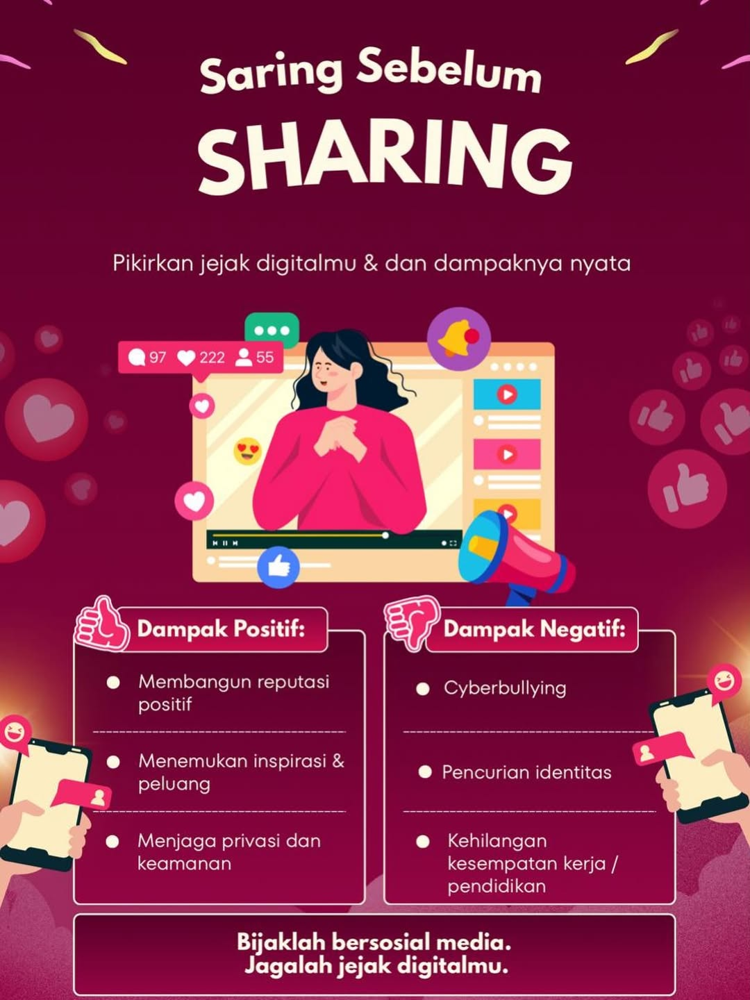
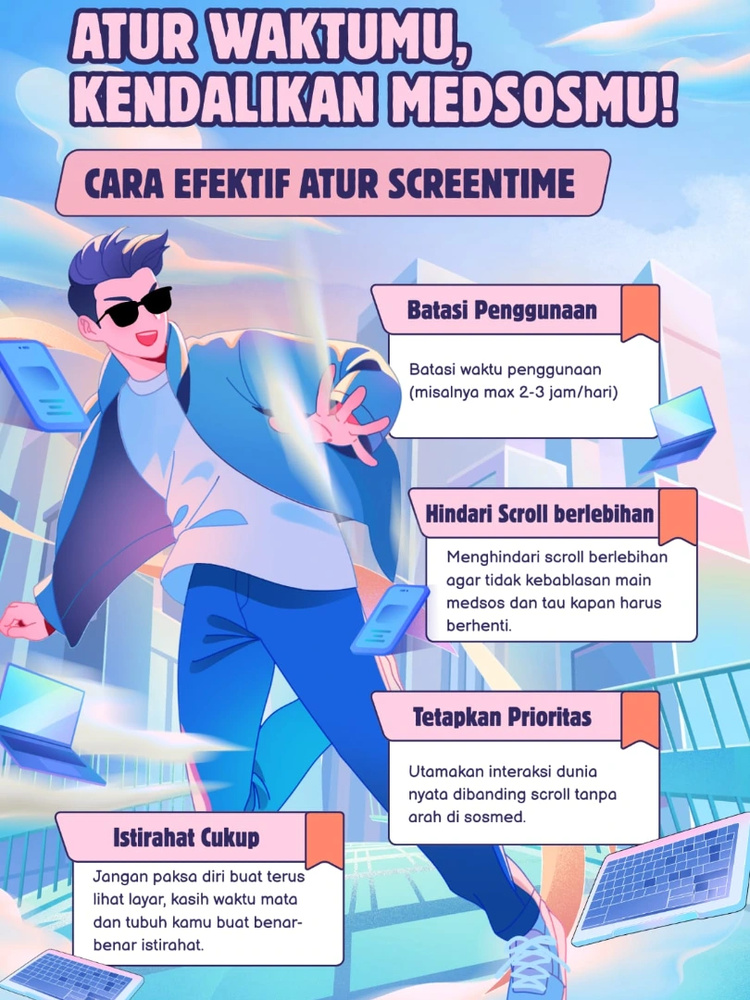
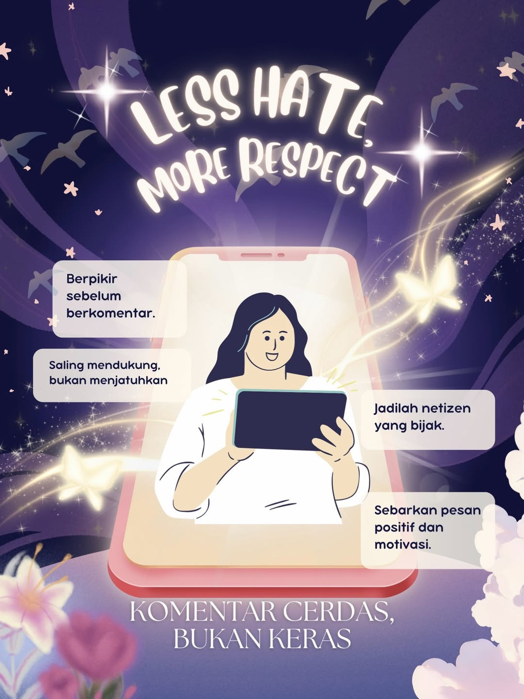
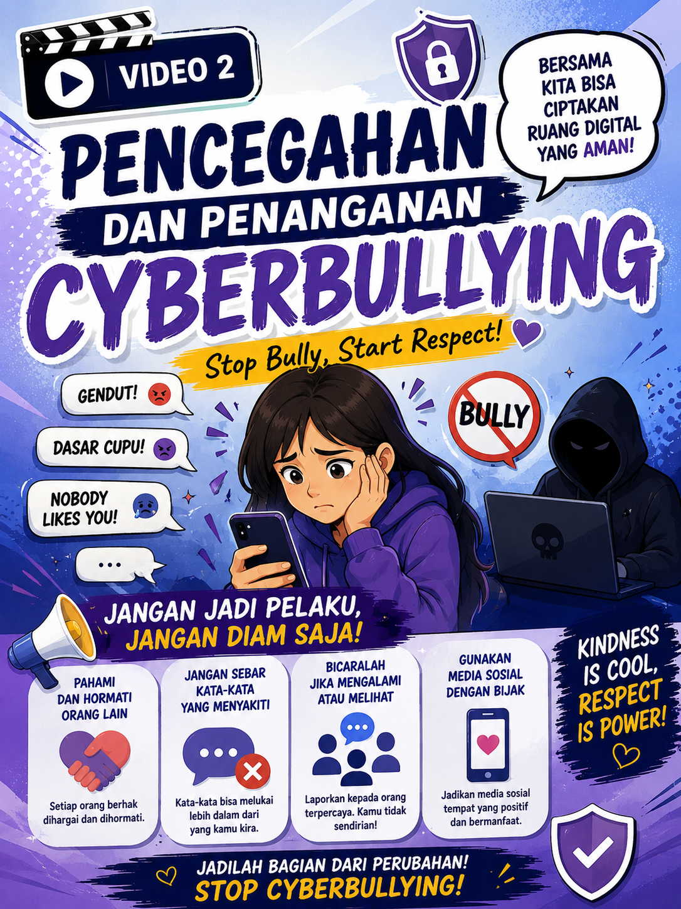
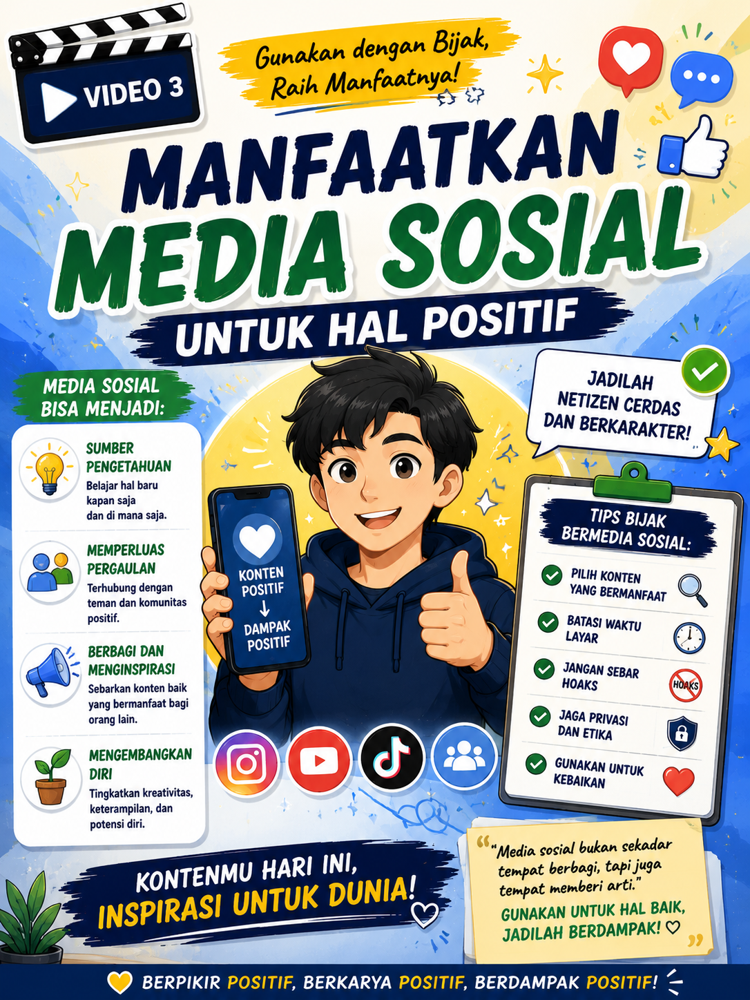

Galeri Dokumentasi
Rekam jejak visual perjalanan transformasi mengajar, kolaborasi, dan interaksi bermakna di SMA Negeri 4 Yogyakarta.

Praktik Mengajar Kelas X
Praktik mengajar langsung di kelas XE5 dengan model pembelajaran PjBL (Project Based Learning).
Lihat Detail
Bimbingan Kelompok
Bimbingan bersama DPL membahas terkait pembuatan Modul Ajar.

Observasi Sekolah
Kegiatan pengenalan lingkungan dan budaya sekolah.

Asesmen Pembelajaran
Melaksanakan asesmen pembelajaran menggunakan media interaktif.

Anggota PPL
Rekan program studi Informatika PPL SMA Negeri 4 Yogyakarta

Foto Bersama
Foto bersama Guru Pamong dan Dosen Pembimbing Lapangan (DPL).
Ruang Karya Praktik Murid
Hasil proyek literasi digital dalam bentuk poster dan video edukasi. Klik pada video untuk menonton.

Literasi dan Verifikasi Informasi Digital
Poster kampanye tentang pentingnya menyaring informasi sebelum membagikan ke orang lain.

Manajemen Penggunaan Media Sosial
Mengajak untuk bijak mengatur waktu dan mengendalikan penggunaan media sosial.

Etika Berkomunikasi di Ruang Digital
Hentikan ujaran kebencian, teguhkan sikap saling menghormati di ruang digital.
Kesadaran terhadap Hak Kekayaan Intelektual
Pentingnya mencantumkan sumber dan tidak membajak karya orang lain di internet.

Pencegahan Cyberbullying
Dampak buruk perundungan digital dan cara melindungi diri. Bersama lawan cyberbullying.

Pemanfaatan Media Digital untuk Kegiatan Positif
Kreatif, kolaboratif, dan menginspirasi. Jadilah agen perubahan di sosial media.